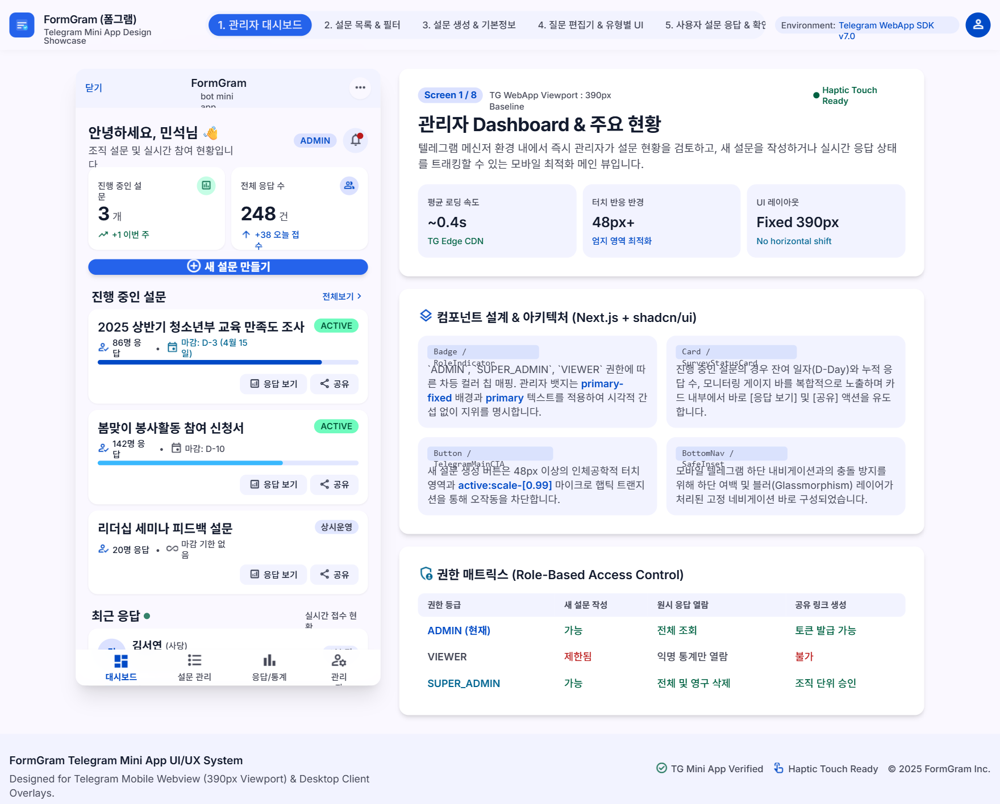
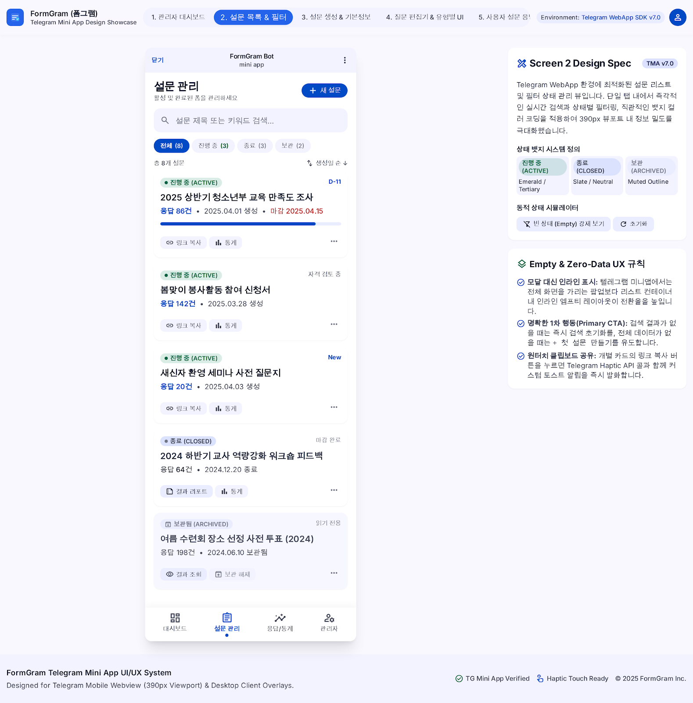
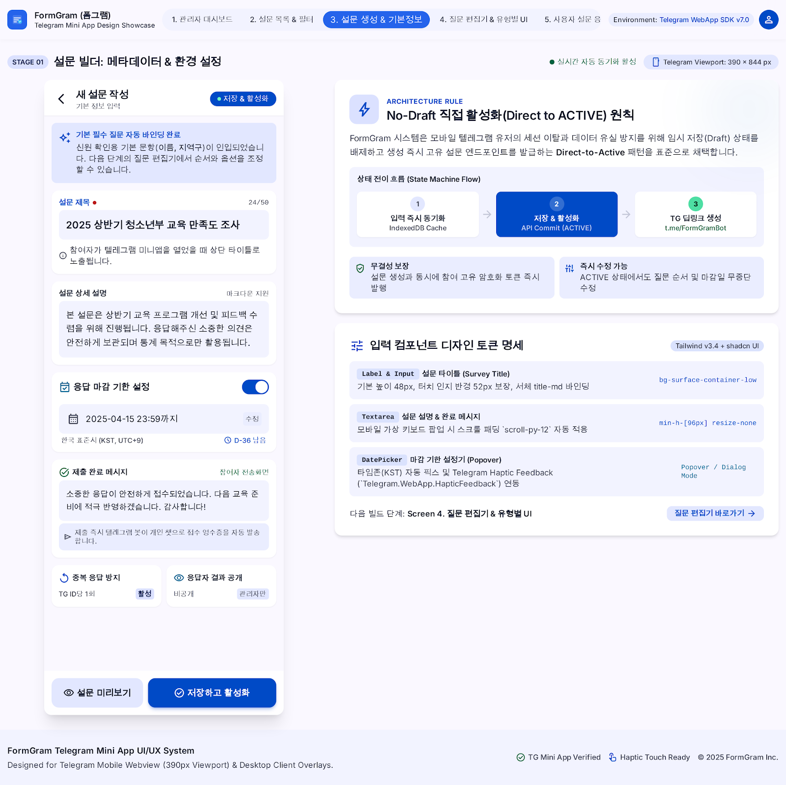
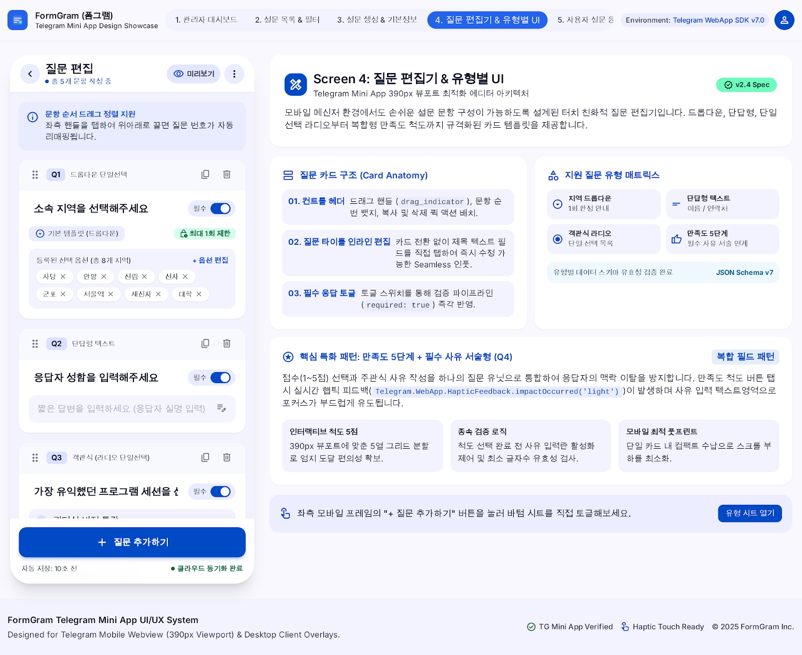
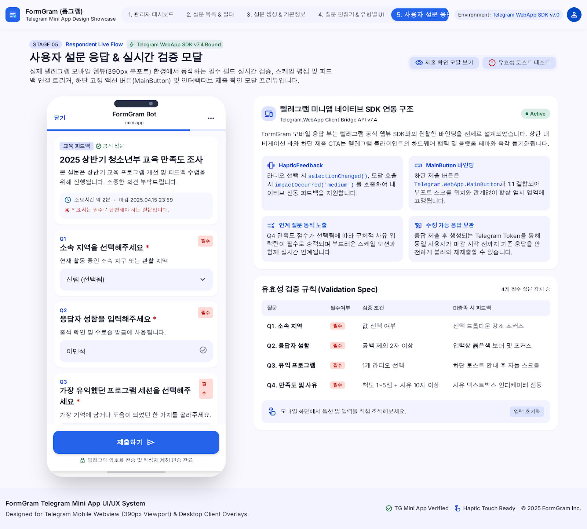
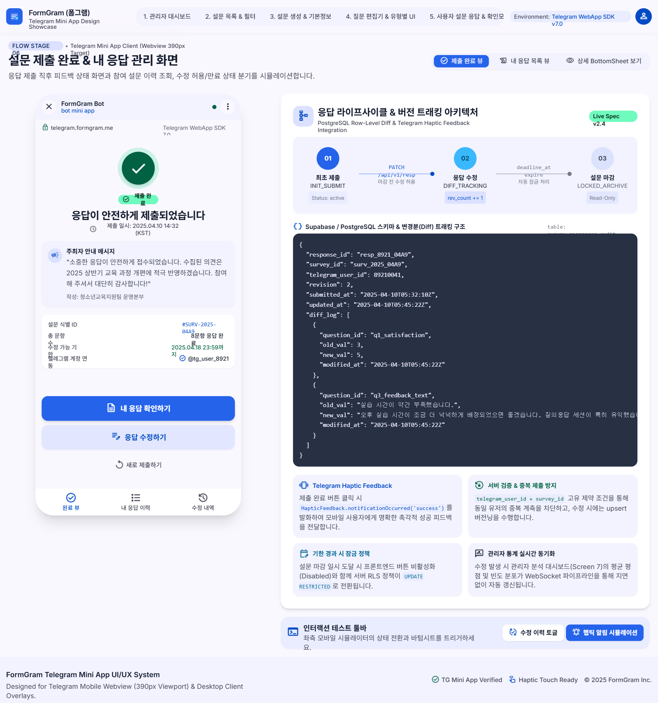

dashboard.html1. 관리자 대시보드
전체 설문 진행 현황, 총 응답 수 및 최근 활동 통계를 한눈에 확인할 수 있는 메인 대시보드 UI입니다.

forms_list.html2. 설문 목록 & 필터
ACTIVE, CLOSED, ARCHIVED 상태별 필터링 및 검색 기능이 제공되는 설문 관리 목록 화면입니다.

form_builder.html3. 설문 생성 & 질문 편집기
Google Forms 스타일의 7가지 질문 유형 편집 및 기본 필수 질문(지역, 직분, 이름) 템플릿 제작 화면입니다.

member_management.html4. 관리자 권한 관리
SUPER_ADMIN이 신청자의 텔레그램 프로필을 확인하고 승인/거절 및 권한(ADMIN/VIEWER)을 변경하는 UI입니다.

user_survey_form.html5. 사용자 설문 응답 폼
Telegram Mini App 390px 모바일 뷰포트 기반 일반 사용자 설문 응답 입력 및 제출 확인 모달 화면입니다.

user_my_responses.html6. 제출 완료 & 내 응답
설문 제출 완료 안내 및 본인이 제출했던 이전 응답 내역 조회 / 수정 폼 화면입니다.